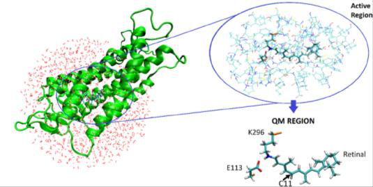
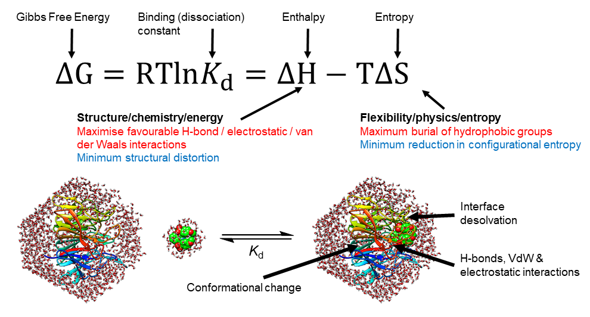
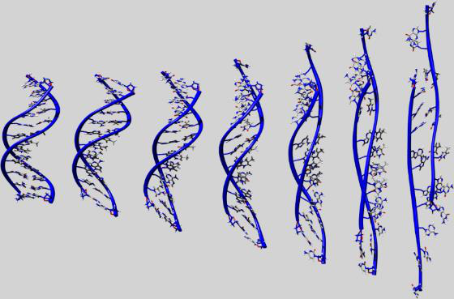
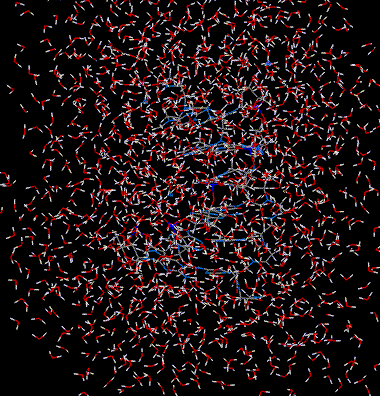
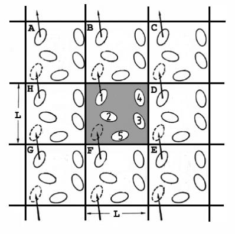

Molecular Dynamics Simulations
In the summer of 1957, Berni Alder and Tom Wainwright sat before the
MANIAC computer at Los Alamos National Laboratory and watched 32 hard
spheres bounce around a virtual box.The MANIAC (Mathematical Analyzer Numerical Integrator
and Automatic Computer) was built in 1952 and could perform about 10,000
operations per second. A modern GPU performs \(10^{13}\) floating point operations per
second.
The spheres had no attractive forces between them, no
internal structure, no chemistry. They simply collided elastically
according to Newton’s laws. Yet from this spartan model, Alder and
Wainwright extracted a result that had eluded theorists for decades:
hard spheres undergo a first-order phase transition from a disordered
fluid to an ordered solid when compressed beyond a critical density. The
crystallization was not programmed in. It emerged from the dynamics
alone.
Within a few years, Aneesur Rahman at Argonne simulated 864 argon atoms interacting through a Lennard-Jones potential and computed the first realistic velocity autocorrelation functions for a liquid. By 1971, Rahman and Frank Stillinger had simulated liquid water with 216 molecules, reproducing radial distribution functions that matched X-ray scattering data. The trajectory from 32 structureless spheres to the million-atom, millisecond simulations that David Shaw’s group runs today on purpose-built hardware traces one of computational science’s great arcs. The method at the core has not changed: solve Newton’s equations of motion for a collection of particles interacting through an empirical potential energy function, and record the trajectory.
This chapter develops molecular dynamics simulation from its statistical mechanical foundations through the practical details of force fields, integration algorithms, temperature and pressure control, treatment of long-range electrostatics, and enhanced sampling methods. We close with trajectory analysis techniques that connect simulation output to experimentally measurable quantities.
Statistical Mechanics Foundations
We begin with the canonical ensemble.The canonical ensemble describes a system at constant
number of particles \(N\), volume \(V\), and temperature \(T\). We call it the NVT ensemble.
Consider a system of \(N\) classical particles confined to a
volume \(V\) and in thermal equilibrium
with a heat bath at temperature \(T\).
The system explores its accessible microstates, each characterized by
the positions \(\mathbf{r}^N = (\mathbf{r}_1,
\ldots, \mathbf{r}_N)\) and momenta \(\mathbf{p}^N = (\mathbf{p}_1, \ldots,
\mathbf{p}_N)\) of all particles. The set of all possible \((\mathbf{r}^N, \mathbf{p}^N)\) constitutes
the phase space of the system, a \(6N\)-dimensional space in which the
instantaneous state of the system is a single point.
The canonical partition function connects the microscopic states to macroscopic thermodynamics: \[\label{eq:partition-function} Z = \frac{1}{N! h^{3N}} \int \exp\!\bigl(-\beta H(\mathbf{r}^N, \mathbf{p}^N)\bigr) \, d\mathbf{r}^N \, d\mathbf{p}^N\] where \(\beta = 1/(k_B T)\), \(H\) is the classical Hamiltonian, and the prefactors account for indistinguishability and the classical limit of quantum mechanics. The probability of finding the system in a particular microstate is given by the Boltzmann distribution: \[\label{eq:boltzmann} P(\mathbf{r}^N, \mathbf{p}^N) = \frac{\exp\!\bigl(-\beta H(\mathbf{r}^N, \mathbf{p}^N)\bigr)}{Z}\]
For systems where the Hamiltonian separates into kinetic and potential energy, \(H = K(\mathbf{p}^N) + V(\mathbf{r}^N)\), the partition function factors. The kinetic part integrates analytically (it is a product of Gaussian integrals), and the configurational partition function becomes \[\label{eq:config-partition} Z_{\text{config}} = \int \exp\!\bigl(-\beta V(\mathbf{r}^N)\bigr) \, d\mathbf{r}^N\] This integral cannot be evaluated analytically for systems of interacting particles. Molecular dynamics provides a numerical route.
The connection to thermodynamics is direct. The Helmholtz free energy is \[\label{eq:helmholtz} F = -k_B T \ln Z\] The average energy follows from differentiating the partition function: \[\label{eq:avg-energy} \langle E \rangle = -\frac{\partial \ln Z}{\partial \beta}\] and the pressure from \[\label{eq:pressure} P = -\left(\frac{\partial F}{\partial V}\right)_{N,T} = k_B T \left(\frac{\partial \ln Z}{\partial V}\right)_{N,T}\]
The ergodic hypothesis states that for a sufficiently long trajectory, the time average of any observable \(A\) equals its ensemble average: \[\label{eq:ergodic} \langle A \rangle_{\text{time}} = \lim_{\tau \to \infty} \frac{1}{\tau} \int_0^\tau A\bigl(\mathbf{r}^N(t), \mathbf{p}^N(t)\bigr) \, dt = \langle A \rangle_{\text{ensemble}}\] This is the central justification for molecular dynamics: by propagating trajectories long enough, we can compute thermodynamic averages from a single trajectory rather than sampling independently from the Boltzmann distribution. In practice, “long enough” means the trajectory must visit all relevant regions of phase space, which is the fundamental challenge of MD applied to biomolecules.
Liouville’s theorem places a constraint on how phase space evolves under Hamiltonian dynamics. Define the phase space density \(\rho(\mathbf{r}^N, \mathbf{p}^N, t)\) as the probability density of finding the system at point \((\mathbf{r}^N, \mathbf{p}^N)\) at time \(t\). Liouville’s theorem states that this density is conserved along trajectories: \[\label{eq:liouville} \frac{d\rho}{dt} = \frac{\partial \rho}{\partial t} + \sum_{i=1}^{N} \left( \dot{\mathbf{r}}_i \cdot \frac{\partial \rho}{\partial \mathbf{r}_i} + \dot{\mathbf{p}}_i \cdot \frac{\partial \rho}{\partial \mathbf{p}_i} \right) = 0\] Equivalently, the phase space volume occupied by an ensemble of trajectories is constant in time. This has a practical consequence: numerical integrators that preserve this property (symplectic integrators) do not exhibit systematic energy drift, making them essential for long MD simulations.
Force Fields
The Born-Oppenheimer approximation
separates nuclear and electronic motion.Max Born and J. Robert Oppenheimer published this in
1927. The mass ratio \(m_e/m_p \approx
1/1836\) justifies the separation: electrons adjust
instantaneously to nuclear positions.
Because electrons are roughly 2000 times lighter than
protons, they respond to nuclear motion almost instantaneously. We can
solve the electronic Schrödinger equation for fixed nuclear positions,
obtaining an electronic energy \(E_{\text{elec}}(\mathbf{R})\) that depends
parametrically on the nuclear coordinates \(\mathbf{R}\). This electronic energy,
together with the nuclear repulsion, defines the potential energy
surface (PES) on which nuclei move: \[\label{eq:pes}
V(\mathbf{r}_1, \ldots, \mathbf{r}_N) = E_{\text{elec}}(\mathbf{r}_1,
\ldots, \mathbf{r}_N) + V_{\text{nuc-nuc}}(\mathbf{r}_1, \ldots,
\mathbf{r}_N)\]
Computing the true PES from quantum mechanics for every MD timestep is feasible only for small systems (tens of atoms, for picoseconds). For biomolecular simulations, we approximate \(V\) with an analytical function whose parameters are fit to quantum mechanical calculations and experimental data. This analytical approximation is the force field.

QM/MM partitioning of a biomolecular system.
Functional Form
The standard biomolecular force field decomposes the potential energy into bonded (intramolecular) and nonbonded (intermolecular) terms: \[\label{eq:ff-total} V_{\text{total}} = V_{\text{bond}} + V_{\text{angle}} + V_{\text{dihedral}} + V_{\text{vdW}} + V_{\text{elec}}\]
Bond stretching.
We model covalent bonds as harmonic springs: \[\label{eq:bond}
V_{\text{bond}} = \sum_{\text{bonds}} \frac{1}{2} k_b (r -
r_0)^2\] where \(r\) is the
instantaneous bond length, \(r_0\) is
the equilibrium bond length, and \(k_b\) is the force constant.Typical values: for a C–C single bond, \(r_0 \approx 1.53\) Å and \(k_b \approx 600\) kcal/(mol Å\(^2\)). The harmonic approximation breaks
down far from equilibrium, but covalent bonds rarely stretch more than
0.1 Å at 300 K.
The harmonic form is the leading term in a Taylor
expansion of the true bond potential around its minimum. The force on
atom \(i\) from this term is \(F_i = -k_b(r - r_0) \hat{r}_{ij}\),
directed along the bond.
Angle bending.
Three consecutively bonded atoms form a valence angle \(\theta\), modeled as \[\label{eq:angle} V_{\text{angle}} = \sum_{\text{angles}} \frac{1}{2} k_\theta (\theta - \theta_0)^2\] where \(\theta_0\) is the equilibrium angle (e.g., \(109.5^\circ\) for \(sp^3\) carbon) and \(k_\theta\) is the bending force constant.
Dihedral (torsional) angles.
Four consecutively bonded atoms define a dihedral angle \(\phi\). Unlike bonds and angles, the
torsional potential must be periodic because rotation by \(360^\circ\) returns the same configuration:
\[\label{eq:dihedral}
V_{\text{dihedral}} = \sum_{\text{dihedrals}} k_\phi \bigl[1 +
\cos(n\phi - \delta)\bigr]\] Here \(n\) is the multiplicity (number of minima
per full rotation), \(\delta\) is the
phase offset, and \(k_\phi\) is the
barrier height.For the \(\phi\)
backbone dihedral of alanine in AMBER ff14SB, this is a Fourier series
with terms at \(n=1,2,3\), reflecting
the complex electronic interactions that govern backbone conformational
preferences.
The cosine form arises naturally from the overlap of
adjacent \(p\)-orbitals as a function
of the torsion angle. Some force fields use improper dihedrals (defined
by four atoms not in a consecutive chain) to maintain planarity at \(sp^2\) centers.
Van der Waals interactions.
Nonbonded atoms interact through short-range repulsion (Pauli exclusion) and long-range dispersion (London forces). The Lennard-Jones 12-6 potential captures both: \[\label{eq:lj} V_{\text{vdW}} = \sum_{i<j} 4\epsilon_{ij} \left[ \left(\frac{\sigma_{ij}}{r_{ij}}\right)^{12} - \left(\frac{\sigma_{ij}}{r_{ij}}\right)^6 \right]\] The \(r^{-6}\) attractive term has theoretical justification from second-order perturbation theory of induced dipole interactions. The \(r^{-12}\) repulsive term is computationally convenient (it is the square of \(r^{-6}\)) but has no deep physical basis. The parameter \(\epsilon_{ij}\) sets the well depth and \(\sigma_{ij}\) sets the distance at which the potential crosses zero. The minimum occurs at \(r_{\min} = 2^{1/6} \sigma_{ij} \approx 1.12\,\sigma_{ij}\).
Electrostatic interactions.
Each atom carries a fixed partial charge \(q_i\), and pairs interact through the
Coulomb potential: \[\label{eq:coulomb}
V_{\text{elec}} = \sum_{i<j} \frac{q_i q_j}{4\pi\epsilon_0
r_{ij}}\] These partial charges are not integer electron charges
but fractional values determined by fitting to the quantum mechanical
electrostatic potential around the molecule.The RESP (Restrained Electrostatic Potential) method
used in AMBER fits atomic point charges to reproduce the HF/6-31G*
electrostatic potential on a grid surrounding the molecule.
The Coulomb interaction decays slowly (\(1/r\)), creating both computational and
conceptual challenges that we address in Section 10.5.
Parameterization and Force Field Families
The numbers that enter Equations [eq:bond]–[eq:coulomb] must come from somewhere. The parameterization strategy differs for bonded and nonbonded terms.
Bonded parameters (\(k_b\), \(r_0\), \(k_\theta\), \(\theta_0\), \(k_\phi\), \(n\), \(\delta\)) are typically derived from quantum mechanical calculations on small model compounds. One computes the energy as a function of the internal coordinate at a high level of theory (MP2 or DFT with a large basis set), then fits the force field functional form to reproduce this energy profile.
Nonbonded Lennard-Jones parameters (\(\epsilon\), \(\sigma\)) are fit to reproduce experimental properties of the bulk liquid: density, heat of vaporization, and free energy of hydration. This empirical fitting is necessary because dispersion interactions are difficult to compute accurately from first principles, and because the effective pair potential in a condensed phase differs from the gas-phase pair interaction.
Three major force field families dominate biomolecular simulation. AMBER (Assisted Model Building with Energy Refinement) originated from Peter Kollman’s group at UCSF; its current protein force field is ff19SB. CHARMM (Chemistry at HARvard Macromolecular Mechanics) was developed by Martin Karplus and colleagues; the current generation is CHARMM36m. OPLS-AA (Optimized Potentials for Liquid Simulations, All Atom) from William Jorgensen’s group places particular emphasis on reproducing liquid-state thermodynamics. These force fields differ in their functional forms (CHARMM includes a Urey-Bradley term and CMAP corrections for backbone dihedrals), their charge derivation methods, and their LJ parameter sets, but all share the basic structure of Equation [eq:ff-total].
Combining Rules
The Lennard-Jones potential requires parameters \(\epsilon_{ij}\) and \(\sigma_{ij}\) for every pair of atom types.
Rather than tabulating all \(n(n-1)/2\)
pair interactions explicitly, force fields use combining rules to
generate unlike-pair parameters from the self-interaction parameters.
The Lorentz-Berthelot rules are standard:OPLS uses geometric mean for both \(\sigma\) and \(\epsilon\). These choices affect the
balance of interactions and are part of what distinguishes force field
families.
\[\begin{aligned}
\label{eq:combining-sigma}
\sigma_{ij} &= \frac{\sigma_{ii} + \sigma_{jj}}{2} \\[4pt]
\label{eq:combining-epsilon}
\epsilon_{ij} &= \sqrt{\epsilon_{ii} \cdot \epsilon_{jj}}
\end{aligned}\] The arithmetic mean for \(\sigma\) (Lorentz rule) and geometric mean
for \(\epsilon\) (Berthelot rule) have
limited physical justification but work well in practice for most
organic systems.
Integration Algorithms
With the force field defined, we must propagate Newton’s equations of motion: \[\label{eq:newton} m_i \frac{d^2 \mathbf{r}_i}{dt^2} = \mathbf{F}_i = -\nabla_i V(\mathbf{r}^N)\] for \(i = 1, \ldots, N\). This is a system of \(3N\) coupled second-order ordinary differential equations. Because the potential \(V\) depends on all particle positions simultaneously (through the nonbonded terms), analytical solutions do not exist for \(N > 2\). We must integrate numerically.
The Verlet Algorithm
Loup Verlet introduced this algorithm in his 1967 simulation of
liquid argon.Verlet’s paper (Verlet 1967) simulated 864 argon atoms
with a Lennard-Jones potential, essentially repeating Rahman’s earlier
calculation but with a new integration scheme that proved superior to
the predictor-corrector methods then in use.
The derivation starts from two Taylor expansions of the
position around time \(t\): \[\begin{aligned}
\label{eq:taylor-forward}
\mathbf{r}(t + \Delta t) &= \mathbf{r}(t) + \mathbf{v}(t)\Delta t +
\frac{1}{2}\mathbf{a}(t)\Delta t^2 + \frac{1}{6}\mathbf{b}(t)\Delta t^3
+ \mathcal{O}(\Delta t^4) \\[4pt]
\label{eq:taylor-backward}
\mathbf{r}(t - \Delta t) &= \mathbf{r}(t) - \mathbf{v}(t)\Delta t +
\frac{1}{2}\mathbf{a}(t)\Delta t^2 - \frac{1}{6}\mathbf{b}(t)\Delta t^3
+ \mathcal{O}(\Delta t^4)
\end{aligned}\] where \(\mathbf{a}(t) =
\mathbf{F}(t)/m\) is the acceleration and \(\mathbf{b}(t)\) is the jerk (\(d^3\mathbf{r}/dt^3\)). Adding these two
equations cancels the odd-order terms: \[\label{eq:verlet}
\mathbf{r}(t + \Delta t) = 2\mathbf{r}(t) - \mathbf{r}(t - \Delta t) +
\frac{\mathbf{F}(t)}{m}\Delta t^2 + \mathcal{O}(\Delta t^4)\]
The Verlet algorithm is fourth-order accurate in position (the local truncation error is \(\mathcal{O}(\Delta t^4)\)) while requiring only one force evaluation per timestep. It is time-reversible: swapping \(\mathbf{r}(t+\Delta t)\) and \(\mathbf{r}(t-\Delta t)\) gives the same equation. Velocities do not appear explicitly but can be estimated from finite differences: \[\label{eq:verlet-velocity} \mathbf{v}(t) = \frac{\mathbf{r}(t + \Delta t) - \mathbf{r}(t - \Delta t)}{2\Delta t} + \mathcal{O}(\Delta t^2)\]
The practical difficulty with the original Verlet scheme is that it computes \(\mathbf{r}(t+\Delta t)\) as the sum of a large number (\(2\mathbf{r}(t)\)) and a small number (\((\mathbf{F}/m)\Delta t^2\)), leading to loss of numerical precision. The velocity Verlet reformulation avoids this.
Velocity Verlet
The velocity Verlet algorithm computes positions and velocities at
the same time, avoiding the precision issue:Swope, Andersen, Berens, and Wilson introduced velocity
Verlet in 1982. It is mathematically equivalent to the original Verlet
algorithm but numerically superior.
\[\begin{aligned}
\label{eq:vv-position}
\mathbf{r}(t + \Delta t) &= \mathbf{r}(t) + \mathbf{v}(t)\Delta t +
\frac{1}{2}\frac{\mathbf{F}(t)}{m}\Delta t^2 \\[4pt]
\label{eq:vv-velocity}
\mathbf{v}(t + \Delta t) &= \mathbf{v}(t) +
\frac{1}{2}\frac{\mathbf{F}(t) + \mathbf{F}(t+\Delta t)}{m}\Delta t
\end{aligned}\]
In practice, the algorithm proceeds in three stages within each timestep. First, update positions using current velocities and forces (Equation [eq:vv-position]). Second, compute forces at the new positions to obtain \(\mathbf{F}(t+\Delta t)\). Third, complete the velocity update using both old and new forces (Equation [eq:vv-velocity]). This requires storing forces from the current step, but the memory overhead is modest.
The Leapfrog Algorithm
An equivalent formulation stores velocities at half-integer timesteps: \[\begin{aligned} \label{eq:leapfrog-v} \mathbf{v}\!\left(t + \tfrac{\Delta t}{2}\right) &= \mathbf{v}\!\left(t - \tfrac{\Delta t}{2}\right) + \frac{\mathbf{F}(t)}{m}\Delta t \\[4pt] \label{eq:leapfrog-r} \mathbf{r}(t + \Delta t) &= \mathbf{r}(t) + \mathbf{v}\!\left(t + \tfrac{\Delta t}{2}\right)\Delta t \end{aligned}\] Positions and velocities “leap” over each other in time. The leapfrog is algebraically identical to velocity Verlet (one can derive each from the other by variable substitution) and is the default integrator in GROMACS.
Timestep Constraints
The timestep \(\Delta t\) must be
small enough to resolve the fastest motions in the system. For an
all-atom simulation, the fastest vibration is the O–H stretch in water,
with a period of roughly 10 fs.The vibrational frequency \(\nu = (1/2\pi)\sqrt{k/\mu}\) where \(\mu\) is the reduced mass. For O–H: \(k \approx 4600\) kJ/(mol nm\(^2\)), \(\mu
\approx 0.97\) Da, giving a period of about 9.5 fs.
Stable integration requires \(\Delta t\) to be at most one-tenth of this
period, giving the standard \(\Delta t =
1\)–2 fs for all-atom MD.
Two strategies permit larger timesteps. The SHAKE algorithm (and its
faster successor LINCS, used in GROMACS) constrains all bonds involving
hydrogen to their equilibrium lengths.SHAKE solves the constraint equations iteratively;
LINCS (LINear Constraint Solver) uses a matrix formulation that is
faster and parallelizes well.
This removes the fastest oscillations and permits \(\Delta t = 2\) fs. Hydrogen mass
repartitioning (HMR) redistributes mass from heavy atoms to their bonded
hydrogens, slowing the fastest remaining vibrations (angle bending) and
permitting \(\Delta t = 4\) fs without
changing thermodynamic properties.
Symplectic Structure
The Verlet family of integrators shares a property that predictor-corrector and Runge-Kutta methods lack: they are symplectic. A symplectic integrator exactly preserves the phase space volume at each step (satisfying a discrete analog of Liouville’s theorem). The consequence is that the total energy does not drift systematically over time. It oscillates around the true value with bounded fluctuations proportional to \(\Delta t^2\), but never creeps upward or downward. For simulations running billions of timesteps, this property is essential for physical correctness.
The formal statement is that the Verlet map \((\mathbf{r}^n, \mathbf{v}^n) \to (\mathbf{r}^{n+1}, \mathbf{v}^{n+1})\) preserves the symplectic two-form \(\omega = \sum_i d\mathbf{r}_i \wedge d\mathbf{p}_i\). One can prove this by showing that the Jacobian of the Verlet map has determinant 1, which follows from its decomposition into successive shear transformations (the Trotter splitting of the Liouville operator).
Thermostats and Barostats
Newtonian dynamics conserves total energy. It generates the microcanonical (NVE) ensemble. To simulate at constant temperature (NVT) or constant pressure (NPT), we must couple the system to external baths that supply or remove energy. The algorithms that accomplish this are thermostats and barostats.
Velocity Rescaling
The simplest approach: compute the instantaneous kinetic temperature \[\label{eq:kinetic-temp} T_{\text{inst}} = \frac{2 K}{(3N - N_c) k_B} = \frac{1}{(3N - N_c)k_B} \sum_{i=1}^N m_i v_i^2\] where \(N_c\) is the number of constraints, and rescale all velocities by \(\lambda = \sqrt{T_0/T_{\text{inst}}}\) to set the temperature exactly to \(T_0\). This generates the correct average temperature but suppresses kinetic energy fluctuations. The resulting ensemble is not canonical: the kinetic energy distribution is a delta function rather than the chi-squared distribution required by the equipartition theorem. Velocity rescaling is useful only for equilibration, never for production.
The Berendsen Thermostat
Berendsen’s weak-coupling method rescales velocities gradually rather
than instantaneously:Berendsen et al. (1984) introduced both the thermostat
and barostat that bear their name. The approach is simple and stable but
does not produce correct fluctuations.
\[\label{eq:berendsen-t}
\frac{dT}{dt} = \frac{T_0 - T}{\tau_T}\] The instantaneous
temperature relaxes exponentially toward \(T_0\) with time constant \(\tau_T\) (typically 0.1–1 ps). At each
step, velocities are rescaled by \[\label{eq:berendsen-lambda}
\lambda = \sqrt{1 + \frac{\Delta
t}{\tau_T}\left(\frac{T_0}{T_{\text{inst}}} - 1\right)}\] The
Berendsen thermostat is stable and efficient for equilibration, but it
suffers from the “flying ice cube” effect in some implementations and
does not generate correct canonical fluctuations. It should not be used
for production runs where thermodynamic properties are computed from
fluctuations.
The Nosé-Hoover Thermostat
Nosé (1984)(Nosé
1984)
introduced an extended-system approach that generates the
correct canonical ensemble. The idea is to augment the physical system
with a fictitious degree of freedom \(s\) (a “thermostat variable”) that acts as
a heat reservoir. Hoover reformulated Nosé’s equations into a more
practical form. The equations of motion become: \[\begin{aligned}
\label{eq:nh-r}
\dot{\mathbf{r}}_i &= \frac{\mathbf{p}_i}{m_i} \\[4pt]
\label{eq:nh-p}
\dot{\mathbf{p}}_i &= \mathbf{F}_i - \xi \mathbf{p}_i \\[4pt]
\label{eq:nh-xi}
\dot{\xi} &= \frac{1}{Q}\left(\sum_{i=1}^N
\frac{\mathbf{p}_i^2}{m_i} - (3N - N_c)k_B T_0\right)
\end{aligned}\] where \(\xi\) is
the thermostat friction coefficient and \(Q\) is the thermostat “mass” that controls
the coupling strength.The thermostat mass \(Q\) has dimensions of energy\(\times\)time\(^2\). A common choice is \(Q = (3N-N_c)k_BT_0\tau_T^2\) where \(\tau_T\) is the desired oscillation period
of the thermostat, typically 0.5–2 ps.
The friction term \(-\xi\mathbf{p}_i\) in Equation [eq:nh-p] either drains kinetic energy (when \(\xi > 0\), the system is too hot) or injects it (when \(\xi < 0\), the system is too cold). The dynamics of \(\xi\) itself (Equation [eq:nh-xi]) ensures that it responds to deviations of the kinetic energy from its canonical expectation value.
We can verify that this extended system conserves a modified Hamiltonian: \[\label{eq:nh-conserved} H_{\text{NH}} = \sum_{i=1}^N \frac{\mathbf{p}_i^2}{2m_i} + V(\mathbf{r}^N) + \frac{1}{2}Q\xi^2 + (3N-N_c)k_BT_0 \int_0^t \xi(t')\,dt'\] and that the Boltzmann distribution for the physical degrees of freedom is a stationary solution of the Liouville equation for the extended system. The Nosé-Hoover thermostat thus generates the correct canonical ensemble, making it suitable for production simulations.
For small or stiff systems, a single Nosé-Hoover thermostat can exhibit non-ergodic behavior (periodic oscillations rather than proper thermalization). Nosé-Hoover chains, where a sequence of thermostats each thermostats the previous one, resolve this issue.
Langevin Dynamics
An alternative route to the canonical ensemble replaces the explicit thermostat variable with stochastic forces. In Langevin dynamics, each particle experiences friction and random kicks: \[\label{eq:langevin} m_i \dot{\mathbf{v}}_i = \mathbf{F}_i - \gamma m_i \mathbf{v}_i + \mathbf{R}_i(t)\] where \(\gamma\) is the friction coefficient (in units of inverse time) and \(\mathbf{R}_i(t)\) is a random force satisfying the fluctuation-dissipation theorem: \[\label{eq:fluct-dissip} \langle \mathbf{R}_i(t) \cdot \mathbf{R}_j(t') \rangle = 6 m_i \gamma k_B T \, \delta_{ij} \, \delta(t-t')\]
The friction removes kinetic energy and the random force injects it; their balance (guaranteed by Equation [eq:fluct-dissip]) maintains the system at temperature \(T\). Langevin dynamics generates the canonical ensemble and is simple to implement. The friction term damps dynamical correlations, so transport properties (diffusion coefficients, viscosities) depend on \(\gamma\) and do not correspond to Newtonian dynamics. Thermodynamic averages, however, are independent of \(\gamma\).
Barostats
Constant-pressure simulation requires a barostat that adjusts the simulation box volume in response to the instantaneous pressure. The virial expression for pressure in a periodic system is \[\label{eq:virial-pressure} P = \frac{Nk_BT}{V} + \frac{1}{3V}\sum_{i<j} \mathbf{r}_{ij} \cdot \mathbf{F}_{ij}\] where the sum runs over all interacting pairs.
The Berendsen barostat couples the pressure to a bath analogously to the thermostat: \[\label{eq:berendsen-p} \frac{dP}{dt} = \frac{P_0 - P}{\tau_P}\] Box vectors are scaled at each step by a factor \(\mu = [1 - (\Delta t/\tau_P)\kappa(P_0 - P)]^{1/3}\), where \(\kappa\) is the isothermal compressibility. Like its thermostat counterpart, the Berendsen barostat gives the correct average pressure but incorrect fluctuations. The volume distribution is too narrow, and properties that depend on volume fluctuations (isothermal compressibility) will be wrong.
The Parrinello-Rahman barostatParrinello and Rahman (1981) extended Andersen’s
constant-pressure method to allow changes in box shape, not just volume.
This is essential for simulating crystal phase transitions.
treats the box vectors as dynamical variables with their
own equations of motion: \[\label{eq:pr-box}
W\ddot{\mathbf{h}} = V(\mathbf{P} -
P_0\mathbf{I})\boldsymbol{\sigma}\] where \(\mathbf{h}\) is the matrix of box vectors,
\(W\) is a fictitious mass, \(\mathbf{P}\) is the instantaneous pressure
tensor, \(P_0\) is the reference
pressure, and \(\boldsymbol{\sigma}\)
is related to the inverse of \(\mathbf{h}\). The particle equations of
motion acquire additional terms from the changing box. This extended
Lagrangian approach generates the correct NPT ensemble and is the
standard choice for production simulations.
Long-Range Electrostatics
The Coulomb interaction poses a
computational challenge that the Lennard-Jones potential does not. The
LJ potential decays as \(r^{-6}\), so
its contribution from atoms beyond a cutoff of 10–12 Å is negligible and
can be corrected analytically. The Coulomb potential decays only as
\(r^{-1}\): the contribution from a
shell of thickness \(dr\) at distance
\(r\) scales as \(\rho \cdot 4\pi r^2 \cdot r^{-1} \, dr \propto
r\,dr\), which diverges. Simply truncating Coulomb interactions
at a cutoff introduces serious artifacts: artificial surface tension at
the cutoff boundary, distorted radial distribution functions, and
discontinuous forces that violate energy conservation.Simulations of ionic systems with simple cutoffs can
produce completely wrong answers, such as incorrect crystal structures
or artifactual phase transitions.
Ewald Summation
Paul Ewald solved this problem in 1921 for computing electrostatic
energies of ionic crystals. The central idea is to split the \(1/r\) potential into two parts: \[\label{eq:ewald-split}
\frac{1}{r} = \frac{\text{erfc}(\alpha r)}{r} + \frac{\text{erf}(\alpha
r)}{r}\] where \(\text{erfc}(x) = 1 -
\text{erf}(x)\) is the complementary error function and \(\alpha\) is a free parameter that controls
the partition.The function \(\text{erfc}(\alpha r)/r\) decays as a
Gaussian-screened Coulomb interaction and converges rapidly in real
space. The remainder \(\text{erf}(\alpha
r)/r\) is smooth and slowly varying, ideal for Fourier
treatment.
The first term, \(\text{erfc}(\alpha r)/r\), is short-ranged (it decays exponentially for large \(r\)) and can be summed directly in real space with a finite cutoff. Physically, this corresponds to surrounding each point charge with a Gaussian charge distribution of opposite sign, which screens the interaction.
The second term, \(\text{erf}(\alpha r)/r\), is long-ranged but smooth. We compute it in reciprocal (Fourier) space, where smoothness translates to rapid convergence of the Fourier series. The reciprocal-space contribution to the energy is: \[\label{eq:ewald-recip} E_{\text{recip}} = \frac{1}{2\pi V} \sum_{\mathbf{k} \neq 0} \frac{\exp(-k^2/4\alpha^2)}{k^2} |S(\mathbf{k})|^2\] where \(S(\mathbf{k}) = \sum_{j=1}^N q_j \exp(i\mathbf{k}\cdot\mathbf{r}_j)\) is the structure factor and the sum runs over reciprocal lattice vectors \(\mathbf{k}\).
We must also subtract the spurious self-interaction of each Gaussian with its own point charge: \[\label{eq:ewald-self} E_{\text{self}} = -\frac{\alpha}{\sqrt{\pi}} \sum_{i=1}^N q_i^2\]
The total electrostatic energy in Ewald summation is: \[\label{eq:ewald-total} E_{\text{elec}} = E_{\text{real}} + E_{\text{recip}} - E_{\text{self}}\]
The parameter \(\alpha\) controls the tradeoff between real-space and reciprocal-space work. Large \(\alpha\) makes the real-space sum converge rapidly (small cutoff needed) but requires more reciprocal-space terms. The optimal choice balances the two, and for \(N\) particles the total complexity of direct Ewald summation is \(\mathcal{O}(N^{3/2})\).
Particle Mesh Ewald
Darden, York, and Pedersen (1993)(Darden,
York, and Pedersen 1993)
introduced the Particle Mesh Ewald (PME) method, which
reduces the complexity to \(\mathcal{O}(N \log
N)\) by exploiting the Fast Fourier Transform. The key insight is
that the structure factor \(S(\mathbf{k})\) can be computed efficiently
if the charges are first interpolated onto a regular grid.
The PME algorithm proceeds in four steps:
Step 1: Charge assignment. Each atomic charge \(q_j\) is spread onto nearby grid points using B-spline interpolation of order \(p\) (typically \(p = 4\) or 6). The interpolated charge at grid point \(\mathbf{n}\) is \[\label{eq:pme-charge} \tilde{\rho}(\mathbf{n}) = \sum_{j=1}^N q_j \prod_{d=1}^3 M_p\!\left(\frac{n_d L_d}{K_d} - r_{j,d}\right)\] where \(M_p\) is the B-spline of order \(p\), \(K_d\) is the number of grid points in dimension \(d\), and \(L_d\) is the box length.
Step 2: Forward FFT. Compute the discrete Fourier transform \(\hat{\rho}(\mathbf{k})\) of the gridded charge density using a 3D FFT. This costs \(\mathcal{O}(K^3 \log K^3)\) where \(K\) is the total number of grid points.
Step 3: Reciprocal-space energy. Multiply \(|\hat{\rho}(\mathbf{k})|^2\) by the Green’s function (the \(\exp(-k^2/4\alpha^2)/k^2\) kernel, corrected for the B-spline interpolation) and sum over all \(\mathbf{k}\)-vectors to obtain the reciprocal-space energy.
Step 4: Inverse FFT and force computation. Compute the reciprocal-space potential on the grid via inverse FFT, then interpolate forces back to particle positions using the same B-spline functions.
The total cost is dominated by the FFT: \(\mathcal{O}(N \log N)\). In practice, PME with a grid spacing of about 1 Å and a real-space cutoff of 10 Å gives electrostatic energies accurate to \(10^{-5}\) relative error. PME is the default electrostatics method in all major MD codes (GROMACS, AMBER, NAMD, OpenMM).
Enhanced Sampling Methods
The fundamental limitation of conventional MD is timescale. A protein folds in microseconds to seconds; a drug unbinds in milliseconds; a conformational change in a signaling protein takes microseconds. Standard MD with a 2 fs timestep produces \(5 \times 10^8\) steps per microsecond. Even on modern GPU hardware, an all-atom simulation of a solvated protein (\(\sim\)50,000 atoms total) runs at roughly 100–500 ns/day. Reaching the millisecond timescale requires purpose-built hardware (Anton) or years of GPU time.

The problem is not merely computational speed. Biomolecular free energy landscapes contain many metastable states separated by barriers much larger than \(k_BT\). A conventional trajectory becomes trapped in local minima, waiting exponentially long (in barrier height) for a rare thermal fluctuation to kick it over the barrier. Enhanced sampling methods modify the simulation to accelerate barrier crossing while preserving the ability to recover correct equilibrium properties.
Replica Exchange Molecular Dynamics
Replica Exchange MD (REMD), also called parallel tempering, runs
\(M\) independent copies (replicas) of
the system simultaneously at a ladder of temperatures \(T_1 < T_2 < \cdots < T_M\).Sugita and Okamoto (1999) adapted the parallel
tempering Monte Carlo method of Swendsen and Wang (1986) to molecular
dynamics. REMD has become one of the most widely used enhanced sampling
methods for small proteins and peptides.
High-temperature replicas cross barriers easily because
\(k_BT\) is large compared to the
barrier heights. Periodically (every few hundred steps), adjacent
replicas attempt to exchange their configurations. The exchange is
accepted with the Metropolis probability: \[\label{eq:remd-acceptance}
P(\text{swap}\; i \leftrightarrow j) = \min\!\left(1, \;
\exp\bigl[(\beta_i - \beta_j)(E_i - E_j)\bigr]\right)\] where
\(\beta_i = 1/(k_B T_i)\) and \(E_i\) is the potential energy of the
configuration currently at temperature \(T_i\).
We can verify that this satisfies detailed balance with respect to the product of canonical distributions at each temperature. If \(E_i > E_j\) and \(T_i < T_j\) (the colder replica has higher energy), the swap moves the high-energy configuration to higher temperature and the low-energy configuration to lower temperature, which is energetically favorable and has high acceptance probability.
The practical challenge is choosing the temperature ladder. Adjacent temperatures must be close enough that their energy distributions overlap, giving reasonable acceptance rates (typically 20–30%). For a system of \(N\) particles, the energy variance scales as \(N\), so the required temperature spacing scales as \(1/\sqrt{N}\). The number of replicas needed grows as \(\sqrt{N}\), making REMD impractical for large systems (beyond \(\sim\)25,000 atoms) without modifications such as replica exchange with solute tempering (REST2).
Metadynamics
Laio and Parrinello (2002) introduced metadynamics as a method to escape free energy minima by progressively filling them with a history-dependent bias potential. The user defines one or more collective variables (CVs) \(s(\mathbf{r})\) that describe the slow degrees of freedom of interest (a dihedral angle, a distance, a coordination number). During the simulation, Gaussian bias potentials are deposited at the current value of the CV at regular intervals \(\tau_G\): \[\label{eq:metad-bias} V_{\text{bias}}(s, t) = \sum_{t' = \tau_G, 2\tau_G, \ldots}^{t' < t} w \exp\!\left(-\frac{(s - s(t'))^2}{2\sigma^2}\right)\] where \(w\) is the Gaussian height and \(\sigma\) is the Gaussian width.
As the simulation progresses, the accumulated bias fills free energy
basins, pushing the system over barriers into new regions of CV space.
In the long-time limit, the bias potential converges to the negative of
the free energy surface:This remarkable property means metadynamics is
self-limiting: once a basin is filled, the bias stops growing there
(because the system no longer visits) and exploration moves to unfilled
regions.
\[\label{eq:metad-fes}
\lim_{t \to \infty} V_{\text{bias}}(s, t) = -F(s) + C\] where
\(F(s)\) is the free energy as a
function of the CV and \(C\) is an
immaterial constant.
Standard metadynamics has a convergence problem: the bias continues to fluctuate around \(-F(s)\) even after the landscape is filled, because Gaussians of constant height keep being deposited. Well-tempered metadynamics (Barducci, Bussi, and Parrinello, 2008) resolves this by decreasing the Gaussian height as the bias grows: \[\label{eq:well-tempered} w(t) = w_0 \exp\!\left(-\frac{V_{\text{bias}}(s(t), t)}{k_B \Delta T}\right)\] where \(\Delta T\) is a parameter controlling the bias deposition rate. The bias converges smoothly to \(-((\Delta T)/(T + \Delta T))F(s)\), from which \(F(s)\) is recovered by rescaling.
The choice of CVs is the art of metadynamics. Good CVs must distinguish the relevant metastable states and capture the slow motions. If important slow degrees of freedom are missing from the CV set, the simulation will still be trapped along those orthogonal directions. Dimensionality reduction methods (PCA, diffusion maps) and machine learning approaches are increasingly used to identify optimal CVs.
Umbrella Sampling and WHAM
Umbrella sampling, introduced by Torrie and Valleau in 1977, predates both REMD and metadynamics. The idea is to divide the reaction coordinate \(s\) into overlapping windows and run separate simulations in each window with a biasing potential that confines the system near a target value \(s_i\): \[\label{eq:umbrella-bias} w_i(s) = \frac{1}{2}k(s - s_i)^2\] where \(k\) is chosen large enough to keep the system near \(s_i\) but small enough to allow overlap with neighboring windows.
Each window \(i\) produces a biased probability distribution \(P_i^{\text{bias}}(s)\). The unbiased free energy \(F(s)\) is recovered by combining data from all windows using the Weighted Histogram Analysis Method (WHAM). The WHAM equations are derived by maximizing the likelihood of the combined data. The key self-consistent equations are: \[\begin{aligned} \label{eq:wham-prob} P(s) &= \frac{\sum_{i=1}^{N_w} n_i P_i^{\text{bias}}(s)}{\sum_{i=1}^{N_w} n_i \exp\bigl[\beta(f_i - w_i(s))\bigr]} \\[6pt] \label{eq:wham-f} \exp(-\beta f_i) &= \int P(s) \exp\bigl(-\beta w_i(s)\bigr) \, ds \end{aligned}\] where \(N_w\) is the number of windows, \(n_i\) is the number of samples from window \(i\), and \(f_i\) is the free energy of the biased system in window \(i\). These equations are coupled (the \(f_i\) depend on \(P(s)\) and vice versa) and must be solved iteratively until convergence. The unbiased free energy is then \(F(s) = -k_BT \ln P(s)\).
The derivation proceeds as follows. In window \(i\), the biased probability of observing the system at CV value \(s\) is \[\label{eq:wham-deriv1} P_i^{\text{bias}}(s) = \frac{P(s)\exp(-\beta w_i(s))}{\int P(s')\exp(-\beta w_i(s'))\,ds'} = P(s)\exp\bigl(-\beta w_i(s) + \beta f_i\bigr)\] where \(\exp(-\beta f_i) = \int P(s)\exp(-\beta w_i(s))\,ds\) is the normalization constant. Inverting this relation for \(P(s)\) from each window and combining the estimates with optimal (minimum-variance) weights yields Equations [eq:wham-prob]–[eq:wham-f].
In practice, umbrella sampling requires careful setup: the windows must overlap sufficiently in CV space, the spring constant must be tuned, and each window must be equilibrated before collecting statistics. Despite this overhead, umbrella sampling remains the gold standard for computing free energy profiles along well-defined reaction coordinates because the statistical error is straightforward to estimate and systematic errors from poor CV choice are easier to diagnose than in adaptive methods.
Trajectory Analysis
A molecular dynamics simulation produces a trajectory: a time series of atomic coordinates (and optionally velocities) saved at regular intervals (typically every 1–10 ps). For a solvated protein of 50,000 atoms saved every 2 ps for 1 \(\mu\)s, this amounts to 500,000 frames of \(50{,}000 \times 3\) coordinates each. Extracting biological insight from this deluge of data requires systematic analysis tools.

Root Mean Square Deviation
The RMSD quantifies how much a structure has deviated from a reference (usually the starting structure or an experimental crystal structure). Given a set of \(N\) atoms with positions \(\mathbf{r}_i^{\text{ref}}\) in the reference and \(\mathbf{r}_i(t)\) at time \(t\), the RMSD after optimal rigid-body superposition is: \[\label{eq:rmsd-trajectory} \text{RMSD}(t) = \sqrt{\frac{1}{N}\sum_{i=1}^N \bigl|\mathbf{r}_i(t) - \mathbf{r}_i^{\text{ref}}\bigr|^2}\] where the positions have been optimally aligned to minimize the RMSD. The optimal rotation matrix is found by the Kabsch algorithm, which computes the singular value decomposition of the cross-covariance matrix \(\mathbf{H} = \sum_i (\mathbf{r}_i - \bar{\mathbf{r}})(\mathbf{r}_i^{\text{ref}} - \bar{\mathbf{r}}^{\text{ref}})^T\) and constructs the rotation as \(\mathbf{U} = \mathbf{V}\mathbf{S}\mathbf{W}^T\) where \(\mathbf{H} = \mathbf{W}\boldsymbol{\Sigma}\mathbf{V}^T\) and \(\mathbf{S}\) corrects for reflection.
A stable RMSD (plateau) indicates the system has equilibrated around a particular conformation. A drifting RMSD suggests ongoing conformational change. Typical RMSD values for well-behaved protein simulations are 1–3 Å for backbone atoms relative to the crystal structure.
Root Mean Square Fluctuation
While RMSD measures global structural deviation at each time point, the RMSF measures the mobility of each residue averaged over the trajectory: \[\label{eq:rmsf} \text{RMSF}_i = \sqrt{\langle |\mathbf{r}_i(t) - \langle \mathbf{r}_i \rangle|^2 \rangle_t}\] where \(\langle \cdot \rangle_t\) denotes a time average. Residues in loops and termini show high RMSF; those in the hydrophobic core show low RMSF.
The RMSF connects directly to crystallographic B-factors (temperature factors) through the Debye-Waller relation: \[\label{eq:bfactor-rmsf} B_i = \frac{8\pi^2}{3}\langle \Delta r_i^2 \rangle = \frac{8\pi^2}{3}(\text{RMSF}_i)^2\] Comparing computed and experimental B-factors provides a validation of the simulation: good agreement indicates that the force field correctly captures the relative flexibility of different protein regions.
Principal Component Analysis of Trajectories
The collective motions of a protein span a wide range of timescales,
from femtosecond bond vibrations to microsecond domain motions.
Principal Component Analysis (PCA) separates these motions by finding
the directions in configuration space along which the system fluctuates
most. We construct the \(3N \times 3N\)
covariance matrix from the trajectory:In practice we compute PCA on the C\(\alpha\) atoms only (reducing to a \(3N_{C\alpha} \times 3N_{C\alpha}\) matrix)
to focus on backbone motions and reduce noise from side-chain
fluctuations.
\[\label{eq:covariance}
C_{ij} = \langle (r_i - \langle r_i \rangle)(r_j - \langle r_j \rangle)
\rangle\] where \(r_i\) and
\(r_j\) run over all \(3N\) Cartesian coordinates (after removing
overall translation and rotation by alignment to the average
structure).
Eigenvalue decomposition of \(\mathbf{C}\) yields \[\label{eq:pca-decomp} \mathbf{C} = \mathbf{U}\boldsymbol{\Lambda}\mathbf{U}^T\] where the columns of \(\mathbf{U}\) are the principal components (eigenvectors) and the diagonal elements of \(\boldsymbol{\Lambda}\) are the corresponding eigenvalues (variances along each direction). The eigenvectors are sorted by decreasing eigenvalue.
A remarkable property of protein dynamics is that typically 90% of the positional variance is captured by the first 10–20 principal components out of thousands. These “essential dynamics” modes correspond to the slowest, largest-amplitude collective motions: domain closures, hinge bending, loop rearrangements. Projecting the trajectory onto the first two or three PCs provides a low-dimensional view of conformational space that reveals metastable states, transitions, and the overall landscape explored by the simulation.
The covariance matrix \(\mathbf{C}\) is related to the inverse of the Hessian of the free energy surface in the harmonic approximation: if the system is confined to a single free energy basin, \(\mathbf{C} = k_BT \mathbf{H}^{-1}\) where \(\mathbf{H}_{ij} = \partial^2 F / \partial r_i \partial r_j\). This connects PCA to the normal modes of the system and to elastic network models.
Practical Considerations
Running a molecular dynamics simulation of a biomolecule involves a series of preparation and validation steps that we summarize here for completeness.
System preparation begins with an experimental structure (X-ray or cryo-EM). Missing residues and atoms are modeled, protonation states are assigned (typically at pH 7), and the protein is placed in a box of explicit water molecules (TIP3P or TIP4P-Ew are common choices). Counterions are added to neutralize the system, and additional salt (typically 150 mM NaCl) is included to mimic physiological conditions. The resulting system size for a typical globular protein is 30,000–100,000 atoms.

Solvated protein system in a simulation box.

Periodic boundary conditions in MD.
Energy minimization (steepest descent or conjugate gradient) removes steric clashes introduced by solvation. Equilibration proceeds in two phases: NVT equilibration (100 ps with position restraints on protein heavy atoms) to stabilize temperature, followed by NPT equilibration (100 ps–1 ns) to adjust the box size to the target pressure (1 bar). Position restraints are gradually released during equilibration.
Production simulations run in the NPT ensemble with the velocity Verlet or leapfrog integrator, a 2 fs timestep (with LINCS constraints on H-bonds), PME electrostatics (grid spacing \(\sim\)1.2 Å, real-space cutoff 10–12 Å), Nosé-Hoover or velocity-rescaling thermostat (with stochastic velocity rescaling being particularly popular in GROMACS), and Parrinello-Rahman barostat. Coordinates are saved every 10–100 ps.
Validation checks during and after the simulation include: conservation of the extended Hamiltonian, stability of temperature, pressure, density, and box volume, convergence of RMSD, absence of unphysical bond lengths, and comparison of computed properties (B-factors, NMR order parameters, radial distribution functions) with experimental data.
Chapter Notes
The foundations of molecular dynamics are treated comprehensively in the textbook by Frenkel and Smit (Frenkel and Smit 2002), which remains the standard reference for computational statistical mechanics. Allen and Tildesley’s Computer Simulation of Liquids (1987, revised 2017) covers implementation details. For force fields, the review by Ponder and Case (2003) in Advances in Protein Chemistry provides historical context on how parameters are derived and validated.
The story of the first MD simulations at Los Alamos and Argonne is told in Alder and Wainwright’s original 1957 paper in the Journal of Chemical Physics and Rahman’s 1964 paper on liquid argon. Verlet’s 1967 paper (Verlet 1967) introduced both the integration algorithm and the neighbor list that bears his name. The development of the Nosé-Hoover thermostat (Nosé 1984) was a breakthrough in extended-system methods; Martyna, Klein, and Tuckerman (1992) generalized it to Nosé-Hoover chains.
The Particle Mesh Ewald method (Darden, York, and Pedersen 1993) transformed biomolecular simulation by making proper long-range electrostatics affordable. Before PME, most simulations used cutoffs of 8–10 Å with various switching functions, leading to artifacts that we now know were responsible for incorrect folding thermodynamics and unstable protein simulations.
Enhanced sampling remains an active research area. Laio and Parrinello’s original metadynamics paper (2002) in PNAS has been cited over 5000 times. The well-tempered variant (Barducci, Bussi, and Parrinello, 2008) solved the convergence problem. Modern developments include funnel metadynamics for binding free energies, on-the-fly probability enhanced sampling (OPES), and machine-learning approaches to collective variable discovery (including methods based on autoencoders and time-lagged independent component analysis).
The connection between MD trajectories and experimental observables is discussed in the reviews by Lindorff-Larsen et al. (2005) on NMR validation and by Hub et al. (2010) on comparison with SAXS data. The principal component analysis approach to protein dynamics was formalized as “essential dynamics” by Amadei, Linssen, and Berendsen (1993).
The Anton special-purpose computer, designed by David Shaw and colleagues (2008), achieved millisecond-timescale simulations of small proteins, demonstrating for the first time that force fields could fold proteins from extended states to their native structures. This milestone validated both the MD methodology and the accuracy of modern force fields, while simultaneously revealing their remaining deficiencies in secondary structure balance and solvation.
For readers implementing MD codes, we recommend beginning with a simple Lennard-Jones fluid in two dimensions and progressively adding features: periodic boundary conditions, the Verlet neighbor list, velocity Verlet integration, the Berendsen thermostat, and finally PME electrostatics. The OpenMM toolkit provides a Python-accessible GPU-accelerated platform for prototyping new methods without writing low-level code.
Special Topics